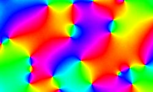

GPU based Monte-Carlo simulation of the XY model on the square 512×512 grid. it is the number of MC iterations per frame.
Different colors correspond to different spin phases. Therefore vortices appear as point deffects where all colors meet together (see Vortices in the XY model).
|  | You can watch vortices formation from random spin configuration. Vortex and anti-vortex attract and annihilate (in a while) each other. Set temperature T = 0.002 to cool down vortices. For T < 0 you will get the antiferromagnetic model. |